外伝四章 k2SLEditor
この章で学ぶこと
k2SLEditor
Ex4.1 k2SLEditorとは
k2Engineを用いてのゲーム開発における画像配置のサポート(ゲームをいちいち実行しなくても、画像がどのように表示されるかわかります)
や、
画像ファイルのdds変換をするツール
である。
Ex4.2 説明
ツールの起動
tools/k2SLEditor/k2SLEditor.exeからツールを起動。
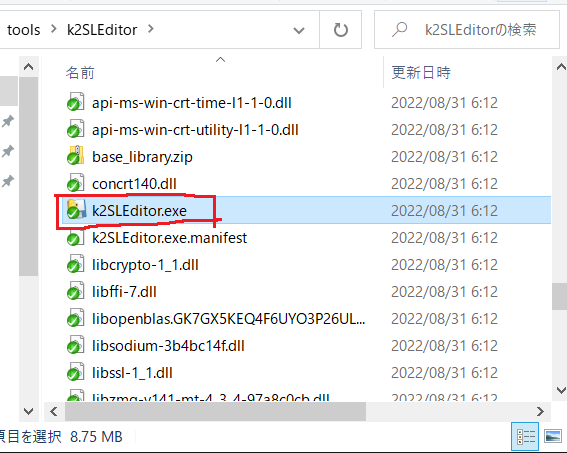 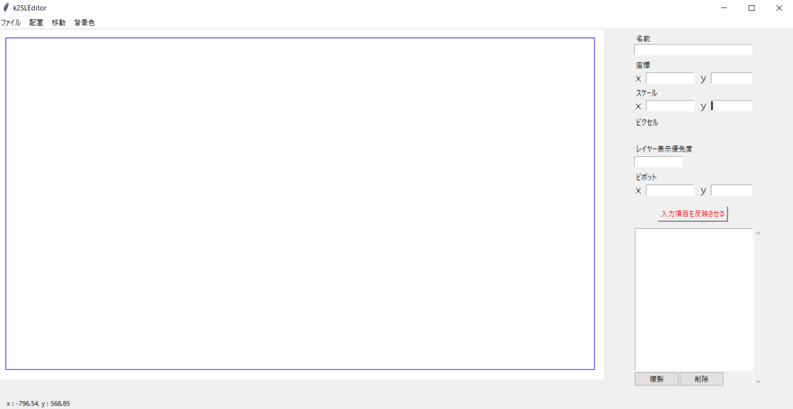
画面説明
大まかなツールの説明
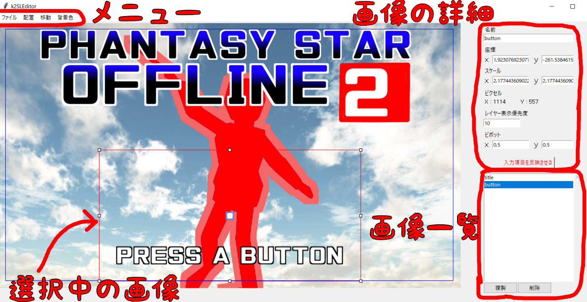
使い方
画像ファイルを読み込んで、配置します。
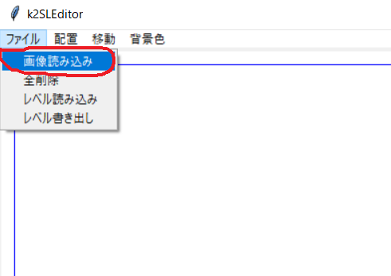 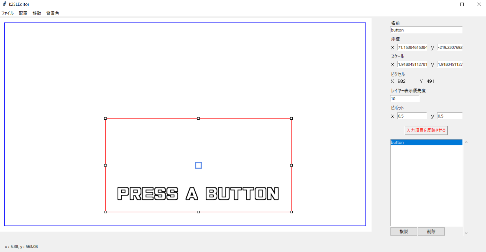
k2Engineでのゲーム制作で、画像詳細欄の通りに値を設定すると、k2SLEditorと同じように画像が表示
されます。
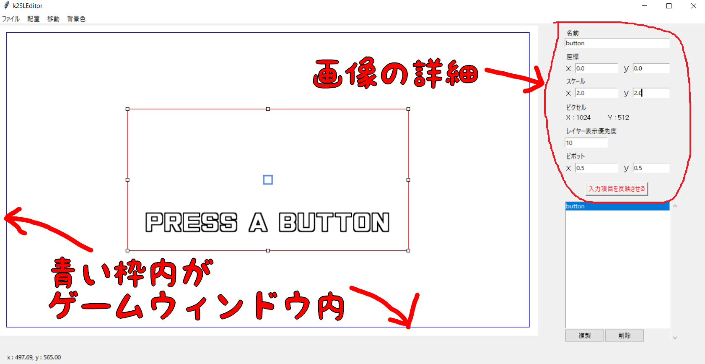 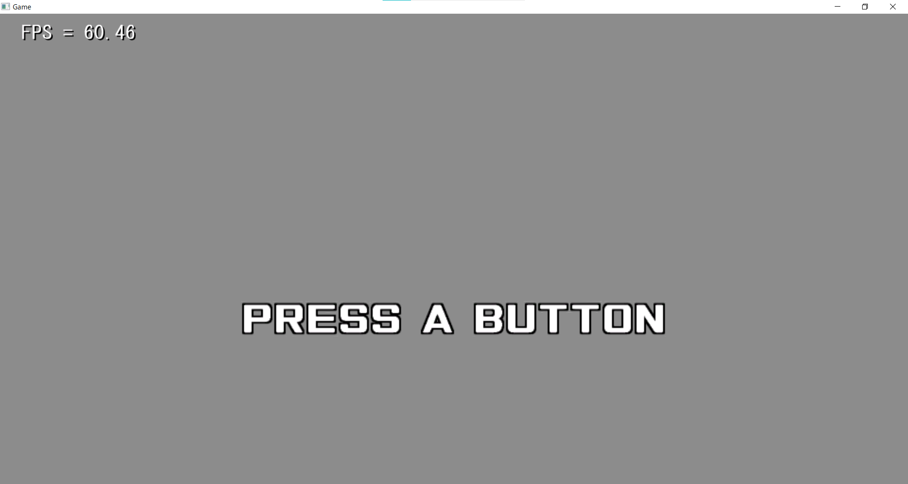
画像の詳細
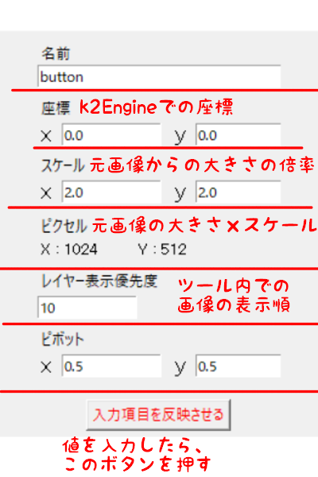
dds変換
「ファイル」→「レベル書き出し」を選択。 適当なフォルダを選んで保存すると、ddsファイルが出力されている。
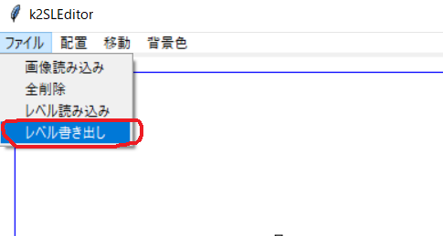
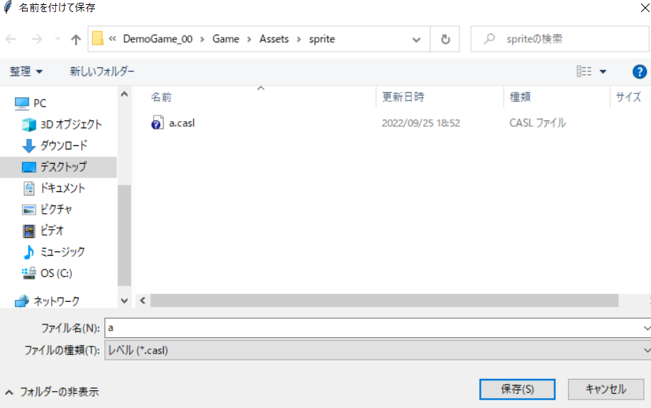
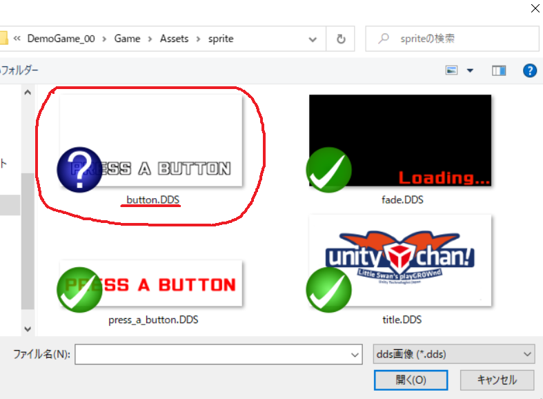
Ex4.3 開発環境
開発環境
Windows10
Visual Studio Code
使用言語
Python
使用したPythonライブラリ
Pyinstaller、tkinter、PIL(Pillow) その他
ソース
toolsProj/k2SLEditorProjにPythonのソースコードが入ってます。
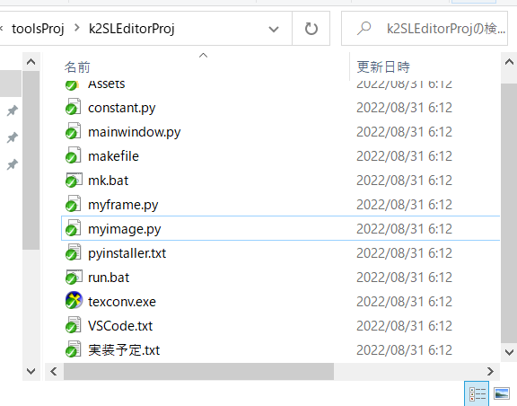
製作期間
2～3ヶ月
Ex4.4 ツール制作のススメ
就活で、ツール作りました！はアピールになることもあります。